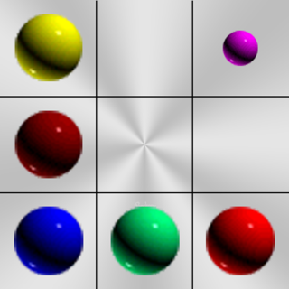
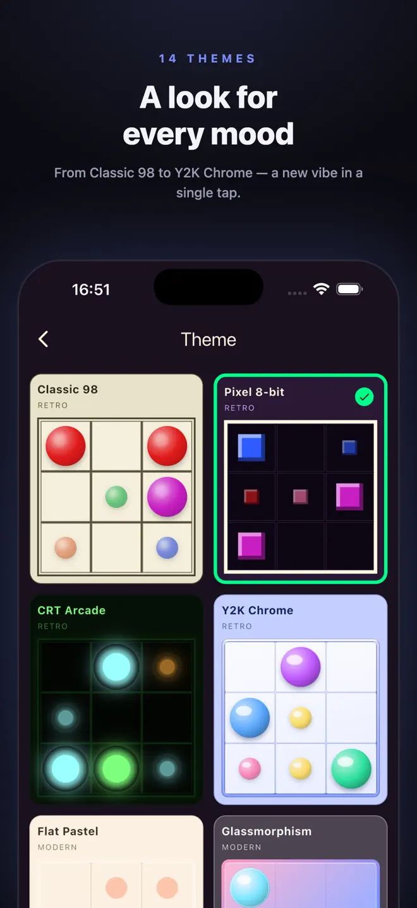
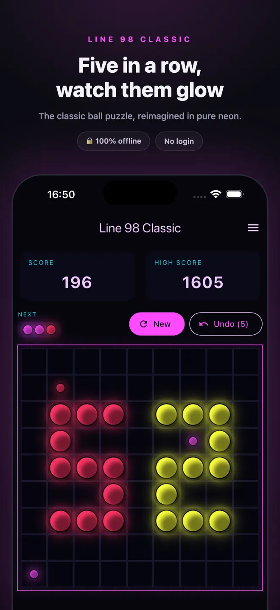
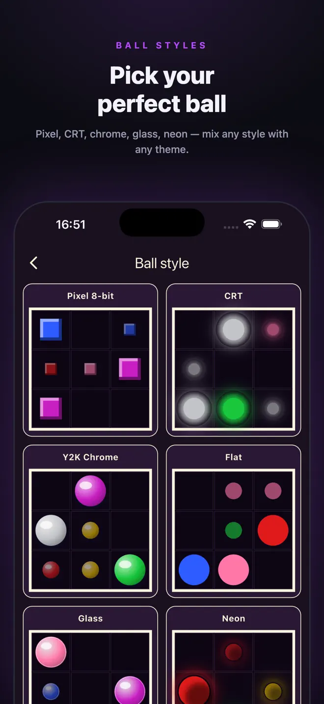
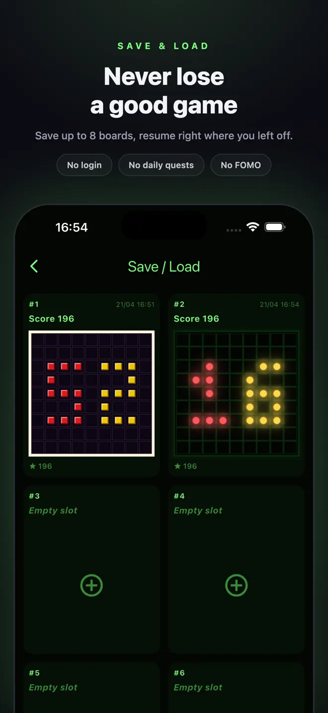

Five in a row. Keep the board alive.
Line 98 Classic is the timeless 9×9 ball puzzle. Tap a ball, tap an empty cell, line up five of the same color — horizontally, vertically or diagonally — and they shatter. Keep going until the board fills up. Simple to learn, hard to put down.
iPhone and Android · Plays fully offline · No login



Features
The puzzle you remember, with a few kind additions
See what is coming
The next three balls and where they will spawn, so you can plan ahead. Hide the preview for a bonus.
14 themes
Classic 98, Pixel 8-bit, CRT Arcade, Y2K Chrome, Flat Pastel, Glass, Neon Cyberpunk, Synthwave, Holographic, Claymation, Paper Origami, Wood, Marble, Brutalist.
14 ball styles
Matched to the themes, and free to mix and match.
Progressive scoring
Longer lines score more — 5, 7, 10, 14, 19 — and crossing lines stack.
Three difficulty levels
Easy with 5 colors, Normal with 6, Hard with 7. Change any time.
Undo and saves
Undo moves during a game, and keep up to 8 named saves to resume later.
How it works
No daily quests. No FOMO. Just the puzzle.

Good to know
Plays offline, saves on your device
- No login and no cloud sync. Your saves live on your device.
- Plays fully offline.
- Contains ads, which use personalization only with your consent and are skipped when you are offline.
- Haptics and sound effects you can turn off any time.
Questions
Before you download
How do you play Line 98?
Move one ball at a time on a 9×9 board. Line up five or more of the same color in a row, column or diagonal to clear them. New balls appear after every move that does not clear a line; the game ends when the board is full.
Can I play offline?
Yes. Line 98 Classic plays fully offline.
Can I undo a move?
Yes. Undo is available during a game.
Does it show the next balls?
Yes. It shows the next three balls and where they will appear. You can hide the preview for a scoring bonus.
Is there an account or login?
No. There is no login, and your saved games live on your device.
Which devices and languages does Line 98 Classic support?
iPhone (iOS 15 or later) and Android. The app is available in 2 languages: English, Vietnamese.
- Made for
- Fans of the classic Lines / Color Lines puzzle and casual puzzle players
- Platforms
- iPhone (iOS 15 or later) · Android
- Languages
- English, Vietnamese
- Category
- Games
- Developer
- Ho Van Dai
- Page updated